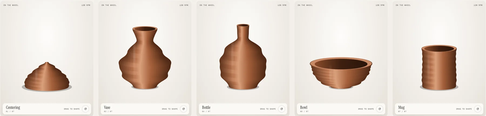
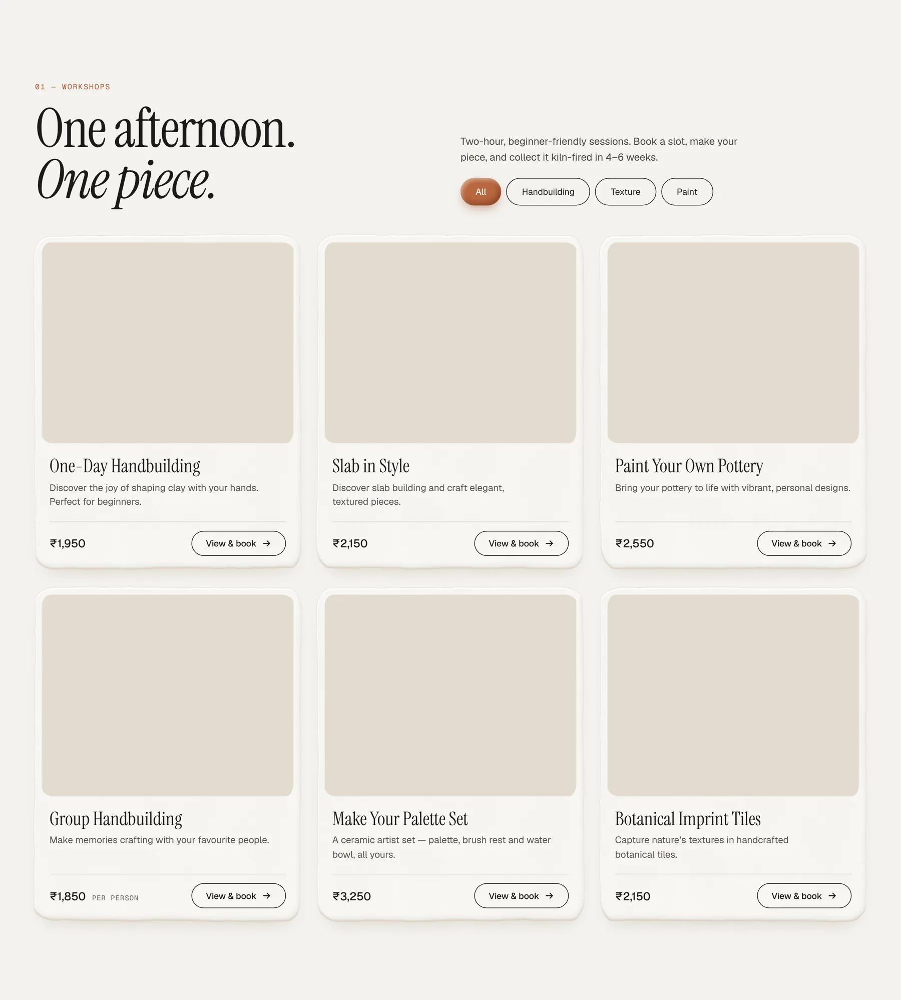
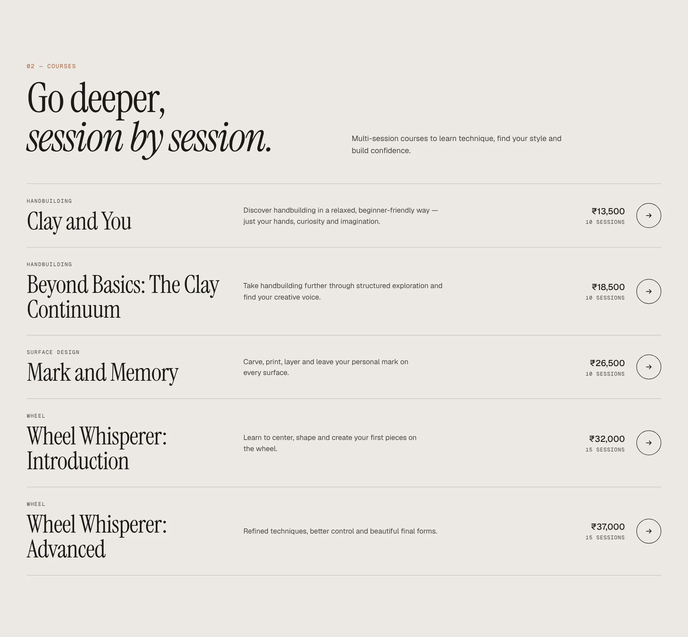
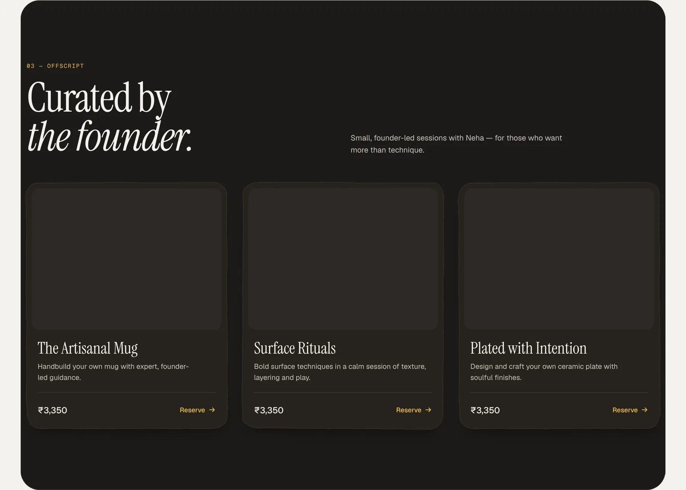
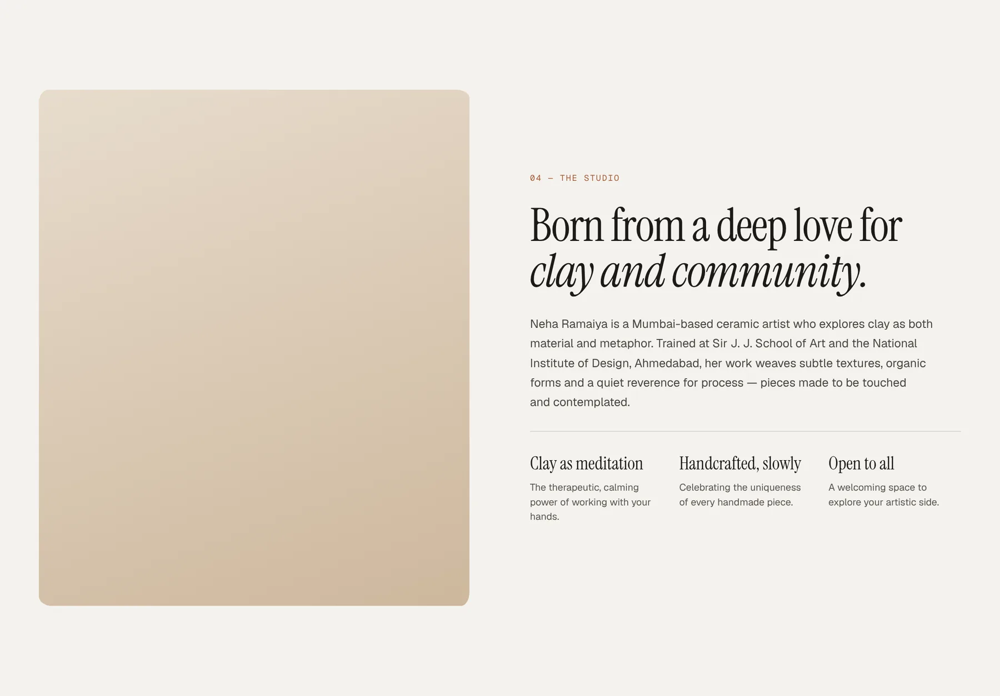
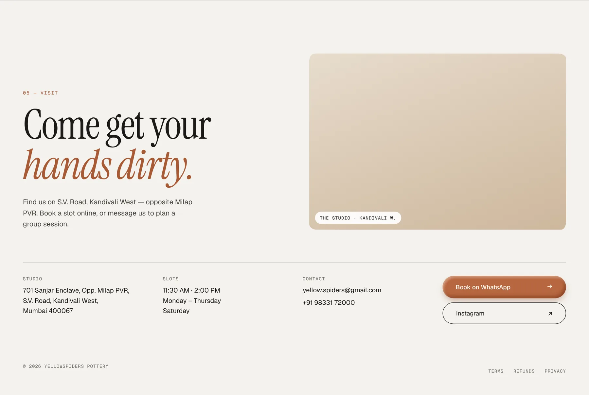

Three ways in
The studio sells very different levels of commitment: a single afternoon, a 10 to 15 session course, or an intimate session with the founder. The site is structured around exactly that, as three clear sections, so a first-timer and a returning student each find their path in one scroll.
Bringing clay onto the screen
Pottery is tactile, and a website isn’t. The hero has an interactive potter’s wheel: drag on it and the clay is shaped through seven forms, from centering to vase, bottle, bowl and mug. It sets the mood before a single word is read, and quietly shows what you could make in a session.

Booking without guesswork
Every workshop card shows the price and a direct booking action, with filters for handbuilding, texture and paint. The hero answers the three questions people ask before booking: how long it takes, when the slots are, and where prices start. Courses are a scannable list with technique, number of sessions and price side by side.


The founder as the brand
Small studios are personal, and Neha is the reason many people come. Founder’s sessions get their own dark section to feel more exclusive, and the studio story gets a section of its own, covering her training and approach to clay in her own terms.


A visual language from the studio
The palette is taken from the materials: off-white like raw clay, warm terracotta from fired pieces, and deep brown for contrast. An editorial serif with italic accents gives it a handmade, gallery feel, while a small mono type carries practical details like prices, timings and session counts.
Getting people through the door
The visit section puts the address, landmark, slot timings and contact together in one place, with booking on WhatsApp as the main action, since that’s how most people in Mumbai already reach small studios.
